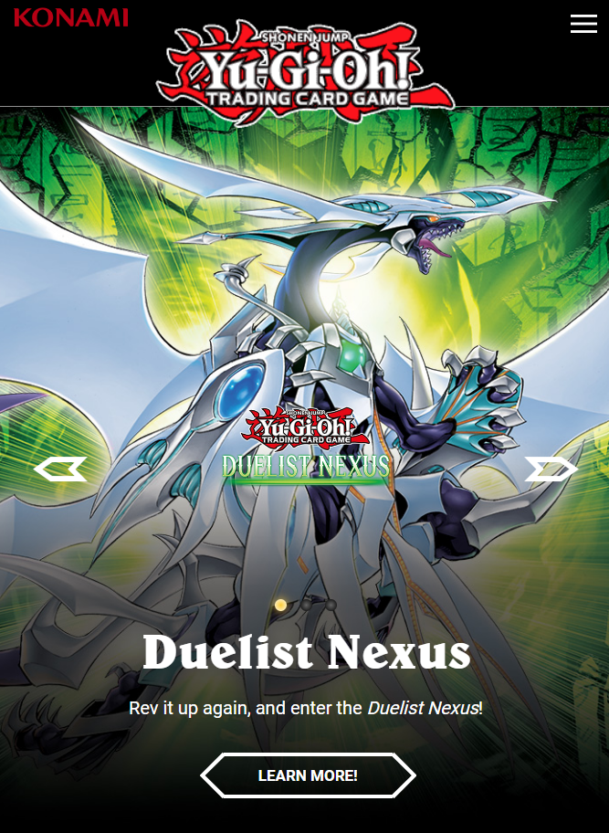
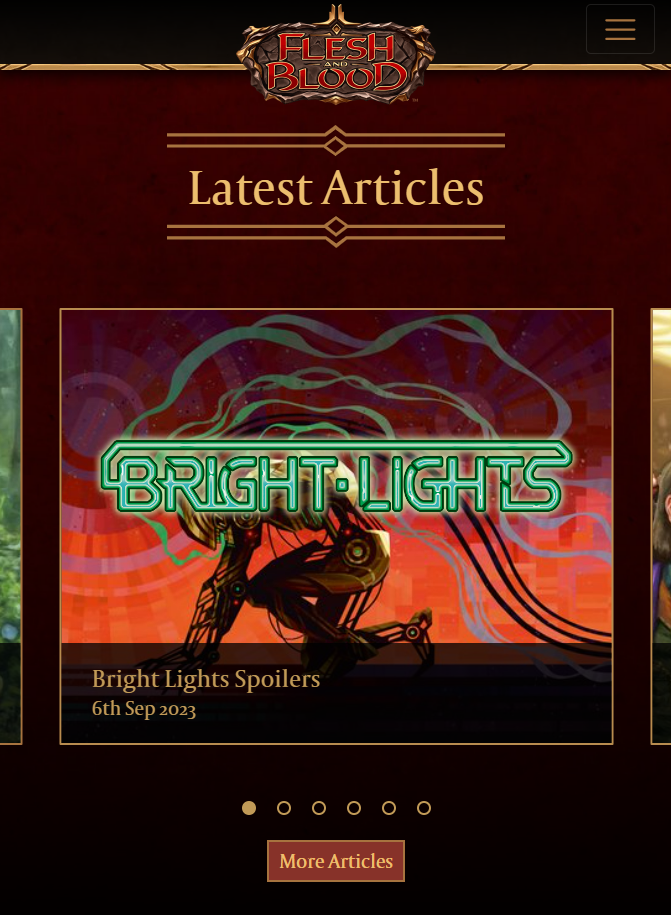
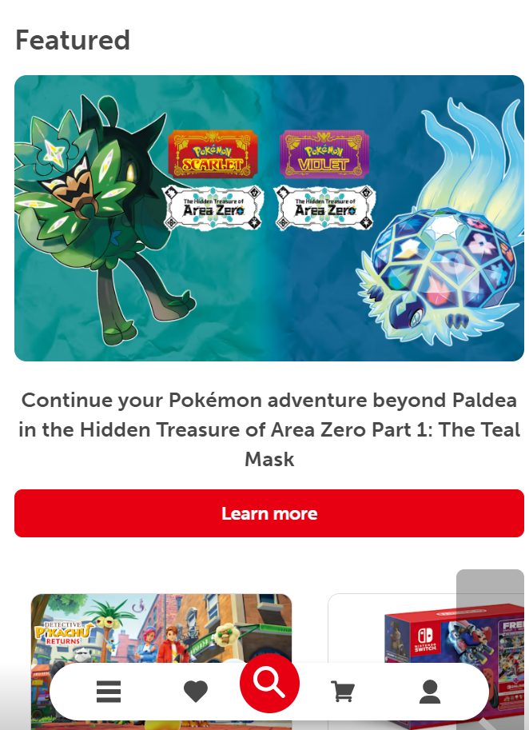

Rule of Thirds
Yugioh TCG Website
Yugioh's main website demonstrates the rule of thirds well. By viewing the website in the perspective of thirds, you can see how each part of the website is divided this way. You have a main attraction in the middle of the screen, and supporting content around the outside.
White Space and Clean Design
Flesh and Blood TCG Website
FAB's website makes excellent use of simple design. In this screenshot, you have very little information that you need to proccess in order to go where you want to. You have a content card with an article link, and ways to pan through the other recent articles.
Fitt's Law
Nintendo's Main Website
The Nintendo website, much like a toy store, has a lot of things to touch. Just in this one screenshot, you can see how many buttons are available to click on and learn more about. And it is all close together, making the clicking even easier. Additionally, while it is not immediately noticable from the screenshot, these content cards are the entire button themselves, allowing for additional convinence.